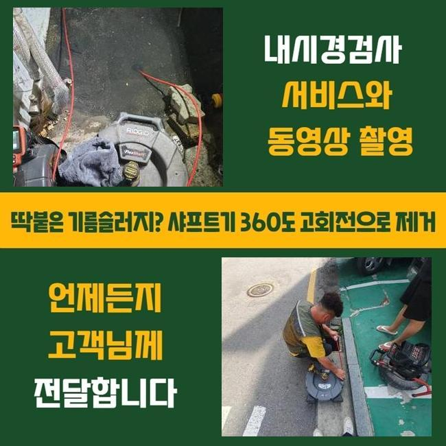
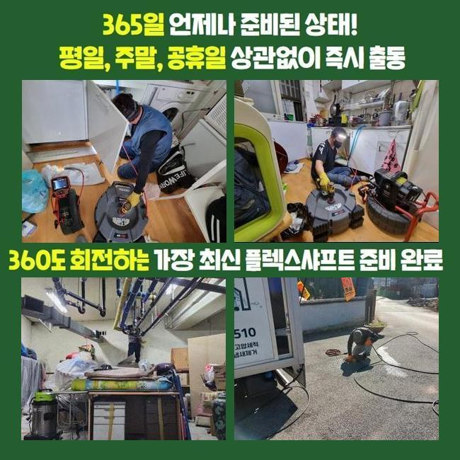
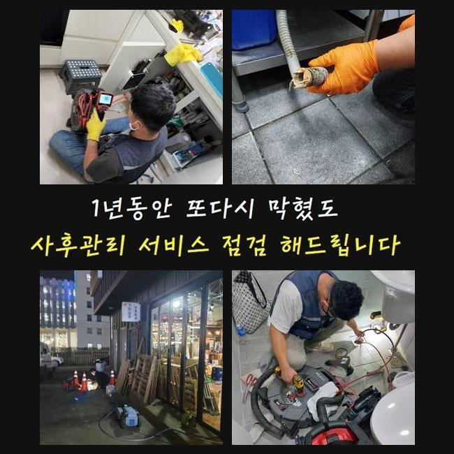
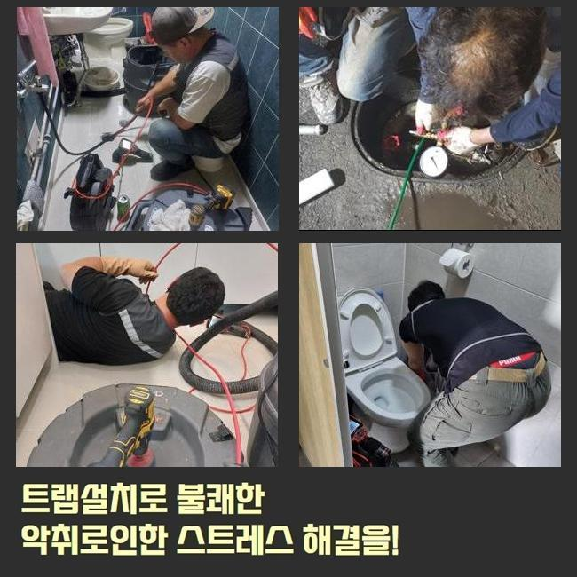
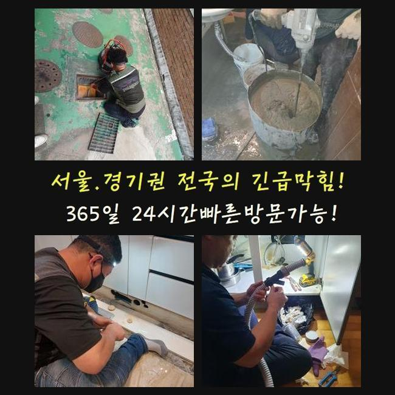
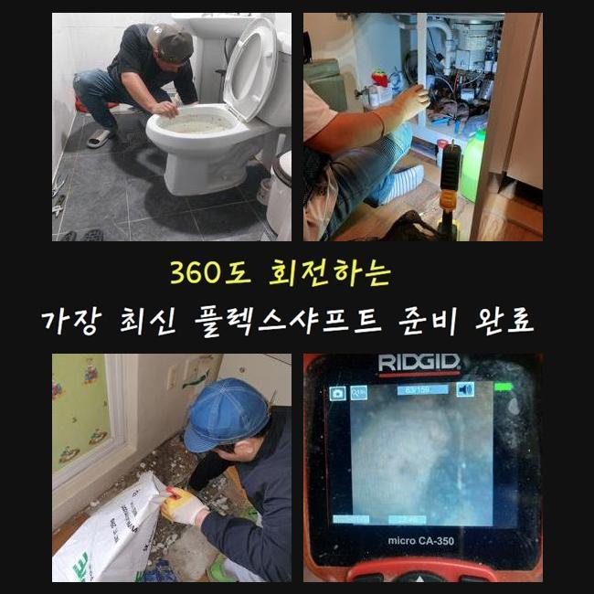
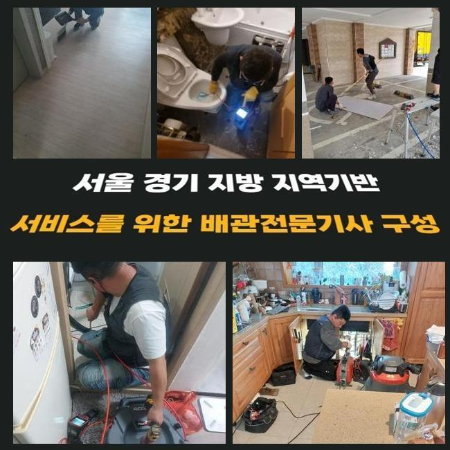

🏠 안산 성포동변기배관막힘 건건동 배수구뚫기 설비출장
안산 싱크대막힘 전문 시공 후기

📋 작업 개요
- 위치: 안산
- 서비스 유형: 싱크대막힘, 변기막힘, 하수구막힘, 배관막힘, 누수수리, 역류해결, 뚫는업체, 배관청소, 고압세척, 설비공사, 악취차단
- 작업 일시: 2025. 2. 1. 22:45
- 업체명: 하수구수사대 (010-5615-2118)
🔍 문제 상황
안산 성포동변기배관막힘 건건동 배수구뚫기 설비출장
하수 방출이 이뤄지지 않는다면 극심한 불편감을 느낄 수 있어요
가장 흔한 사건이라 함은 부엌 안의 싱크대가 잔뜩 오염돼서 하수의 이동이 중단되는 경우도 있으며 변기설비나 바닥 배수구 세탁기 탈수 물이 안빠져서 이용에서의 어려움이 도래할 수 있는 부분입니다
공동주택 거주민분으로부터 의뢰를 받은 상황이라면 세대 내 배관이 막힌 것이니 실내 쪽에서 뚫는 장치들을 가동하여 뚫어냅니다
공용으로 쓰는 메인관로는 공용 연립주택 건물일 때는 보통 문제가 없는지 확인하고 일정 시기마다 클리닝을 받기 때문에 고장이 나는 일은 많이 보이는 건 아니에요
반면에 상업용 건물은 수도설비에 이상이 생길 가능성도 아파트와 비교해서는 대체로 높거든요
오늘 소개할 곳은 상업 건물에 설치된 메인관로가 차단되어 영업공간 안에 설치된 각각의 싱크대에서 물이 새어나와서 문제 요인을 찾아달라며 문의를 넣어주셨습니다
현장을 둘러보았더니 문제가 됐다고 보이는 중앙 파이프라인의 위치가 감지되었습니다
만일 이 메인배관이 잘못되면 호실 안에 포함된 부속 배관의 결함으로 추정하는 것 보다는 공동 배관 시설에 파손부가 일어났거나 이물질이 한껏 침투해서 하수 흐름이 끊어졌을 경우가 더욱 우세합니다

🔎 원인 분석
💡 전문가 진단: 정밀 진단 장비를 사용하여 슬러지의 고착 여부를 판명하고 타격/세척 작업을 실시했습니다.
많은 배관들의 물이 집합하는 배관 먼저 길을 만들고 그 이후로는 비교적 좁은 관로로 이동하게 됩니다
높은 위치에 자리한 파이프였으므로 고공사다리를 두고 고쳐내기로 다짐하고 차단된 하수구 설비의 해결책이 될 장비를 바로 가동하도록 준비시켰습니다
상부만 뚫어내더라도 하단의 배관 파트는 아직 제기능이 회복이 안됐으므로 메인배관을 수리할 시 처음부터 끝에 이르기까지 제대로 뚫어내야 해요
소재구를 직접 찾아서 여의치 않다면 타공해서 시공에 착수할 수 있는 상태로 세팅을 마칩니다
내시경 기기라는 카메라로 문제되는 파이프 안의 상태를 점검해 보았습니다
얼만큼 마비가 됐는지 물의 이동을 꽉 막아버렸던 대상에 관하여 작업에 당장 들어가기 전에 알아내야 작업 방향을 정할 수 있게 됩니다
메인 배관 상의 문제는 배관 자체의 규격이 대형에 속하기 때문에 단독주택처럼 간단한 건수에 방문했을 때 쓰는 석션장치로는 다스리기 힘듭니다
연결부의 길이가 바닥까지 내려가지 못하므로 흡입력도 다소 뒤떨어집니다
기름덩어리를 쪼개어 뚫어내는 역할을 마무리 짓는 샤프트기도 시간이 오래 소요되며 작업부분 훼손도 불가피해서 문제가 될 듯 했습니다

🔧 작업 과정
상업시설 안의 하수구 소통이 원활하지 못하다면 오염된 곳들을 다 치워줘서 설비를 원래대로 고쳐야 합니다
강한 물줄기를 쏴서 곳곳에 퍼져있는 찌꺼기들을 시원하게 빠져나갈 수 있게끔 집중적으로 청소해서 관로를 장애물 없는 환경으로 만들어야 자꾸 막히는 사건들을 다스릴 수 있게 됩니다
하수구 안이 풀이라면 배관 안을 정돈하기가 더 복잡해지니 일단은 스프링 기기가 닿이는 틀어막힌 해당 지점을 집중 타격해서 순환이 되도록 조성한 후에 하수구 청결 작업을 시작하는게 낫겠다 싶었습니다
장치가 들어가려면 슬러지가 꽉 찬 부분에 숨통이 트이게 하는 작업공간을 창출할 수 있었습니다
이번 작업 장소인 빌딩은 안에도 여러 음식가게들이 들어가 있었고 기름성질이 상당량 물과 함께 방출되다보니 관로 위에 굵은 유막이 코팅된 상황이었습니다
온수로 씻어보려고 시도해도 기름은 수용성이 아니기 때문에 쌓인지 오래될수록 석회물질로 변해서 돌덩이처럼 견고한 방해요소가 되어버립니다
이렇게 되기 전에 스케일링을 해주지 않고 오래 놔둔다면 차곡차곡 관로를 메우다가 오염구간이 점차 확장돼서 흘러나갈 길목이 다 막혀서 배수기능이 전혀 달성되지 않을 것입니다
유분기가 많은 기름기를 효용성있게 없애는 수단은 고압세척을 쓰는 것이며 특유의 파워 덕택에 간편한 투자로 더러워진 하수 배관을 새것처럼 만들 수 있었네요
거의 흡착된 듯 붙어있던 것들이 강한 수압에 맞고 점차 정리되는 현황을 배관카메라를 동원해서 검토하면서 청소해나갔습니다
꿈쩍하지 않을 듯 했던 방대한 양의 물질들이 자취를 감추기 시작했으며 미세한 알갱이만 잔여했더라고요
일단 고압세척을 해야한다고 결정나면 상황에 따라 다를 수 있지만 노폐물이 누적된 포인트들을 전체적으로 정돈해주어야 나중에 다시금 막혀버리는 불상사가 일어나지 않습니다
변성까지 이뤄진 기름기를 강력한 물줄기로 해체시키고 아까 썼던 내시경으로 사이사이를 확인하면서 시공의 질을 테스트했습니다
초반에는 하수가 내려갈 공백이 보이지 않을만큼 오염이 됐었던 시설물이지만 관통하는 기기를 돌리는 업무를 해준 이후에는 전부 해체가 되고 사라진 상쾌한 관로를 되찾을 수 있었어요
기능상으로도 완벽한지 검사하고자 통수 테스트를 시행해서 매끄럽게 물이 방출되는 달라진 모습을 명백히 짚어본 이후에 작업 끝을 알렸습니다


✅ 작업 완료
원활한 접근성을 위해 피치 못하게 타공을 해줬던 구역들은 기록해뒀다가 빈틈을 막아줄 전용필름으로 빈틈없이 감싸줘서 누수가 발생되지 않게 단속까지 마쳤습니다
장기사용으로 결함이 생긴 하수구로 많은 곤란함이 있었던 건물의 한 매장에서 습한 물기가 고여만 갔고 싱크대 수돗물의 역류 증세도 빚어졌던 상황을 바로잡고서 고객님 댁을 떠났습니다
이처럼 빅사이즈의 배수로를 다루는 것은 스스로 처리하기가 힘든 문제인 만큼 섣부르게 자가조치를 무분별하게 취하다간 수도관이 균열이 가거나 부서지는 상황까지 악화될 수 있습니다
일반 가정집은 물론이고 특수한 공간이나 상업시설이라도 올바른 원인 규명을 통해서 설비를 순탄하게 가동되도록 해드리니 걱정하지 않으셔도 됩니다




⚠️ 베란다 누수 및 방수 관리 방법
- ✅ 비가 많이 올 때 창틀 주변이나 아래층 천장에 얼룩이 생기는지 정기적으로 확인해 보세요.
- ✅ 우수관 주변 실리콘 마감이 들뜨거나 깨진 틈새가 있는지 손상 여부를 수시로 체크하세요.
- ✅ 베란다 바닥 타일의 줄눈(메지)이 소실되면 그 틈으로 물이 침투하여 누수가 유발됩니다.
- ✅ 누수 의심 증상 발견 시 방치하면 아래층 손실이 커지므로 즉시 전문가의 진단을 받으십시오.
💡 핵심 정리
- 확실한 장비 작업(내시경 점검 및 샤프트 스케일링)으로 원인을 뿌리 뽑습니다.
- 작업 후 1년 이내에 동일한 부위 재발 시 100% 무상 A/S 서비스를 보장합니다.
- 서울 · 경기 · 인천 전 지역에 24시간 언제든 긴급 출동할 수 있도록 항시 대기 중입니다.
❓ 자주 묻는 질문 (FAQ)
🚨 안산 싱크대막힘 문제로 고민이신가요?
정확한 원인 진단과 확실한 시공으로 재발 없는 해결을 약속드립니다.
24시간 긴급 출동 | 서울 · 경기 · 인천 전지역 | 1년 내 재발 시 무상 A/S